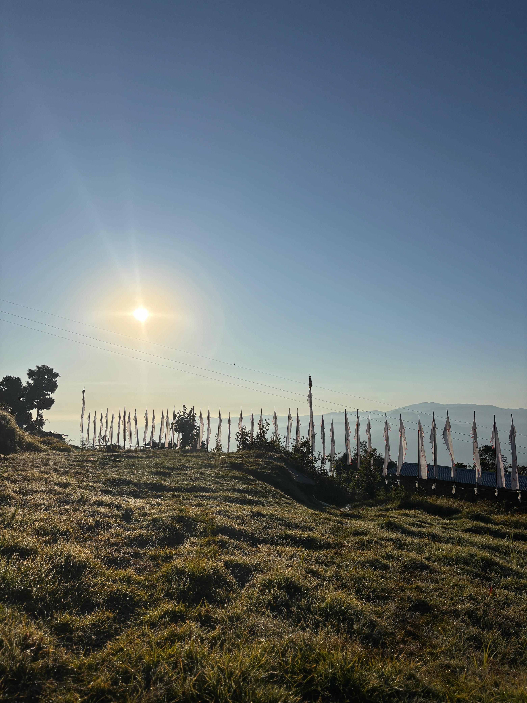
Walk to the Monastery
The path is narrow. The canopy is thick. Light comes in at angles. You hear the cave before you see it. The forest does not perform. It simply is.
You carry back the silence. It stays longer than the memory does.
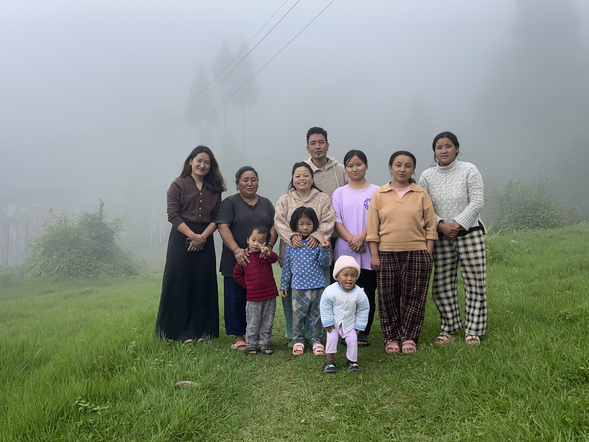
A Sherpa village with something the world has been looking for.
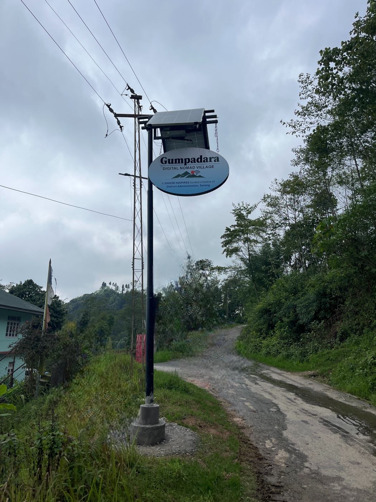
Within the larger Gumpadara village in Soreng sits Jautaar, a small hamlet of six Sherpa households on a forested hillside. Above the District Magistrate's Residency. Views reaching as far as Darjeeling. Deep quiet. Unhurried. Twelve homestay rooms across six homes. A monastery and meditation cave 700 metres into the forest. Terraced farms. A dairy cooperative. Prayer flags in the wind.
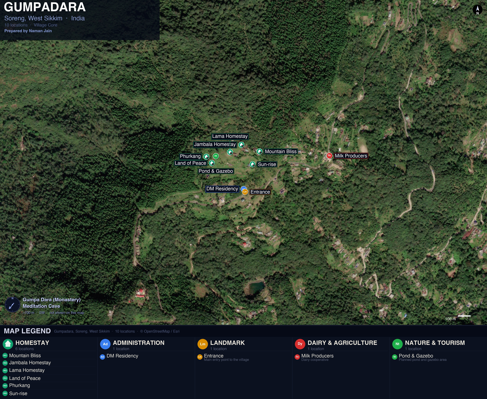
Twelve rooms, six families. All with mountain views and attached bathrooms.
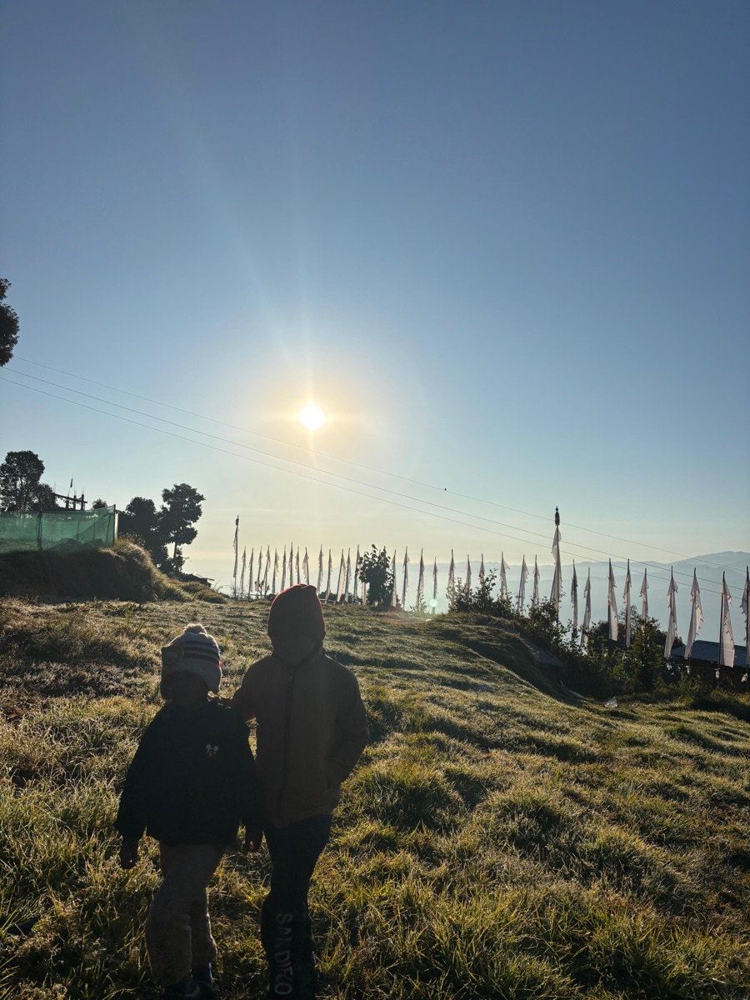
Gumpa Dara Monastery and Meditation Cave. 700m through forest.
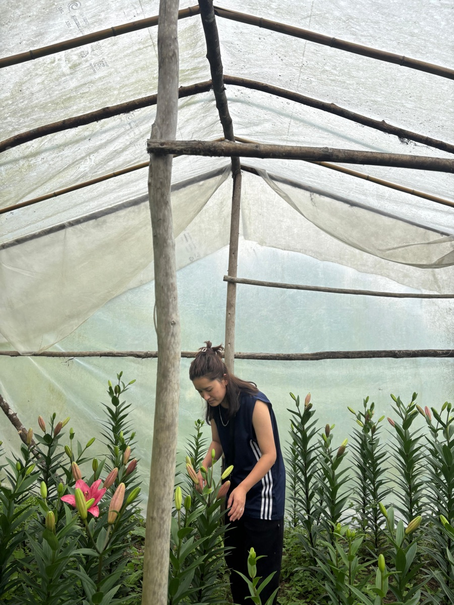
600 rhododendron species. Ancient forest. Medicinal herbs. Bird corridors. One of Sikkim's most biodiverse hillsides.
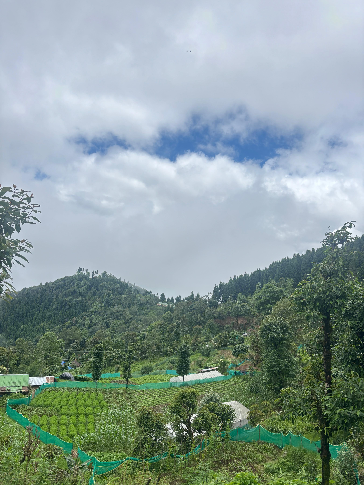
Working terraced farms. A functioning dairy cooperative. Real food.
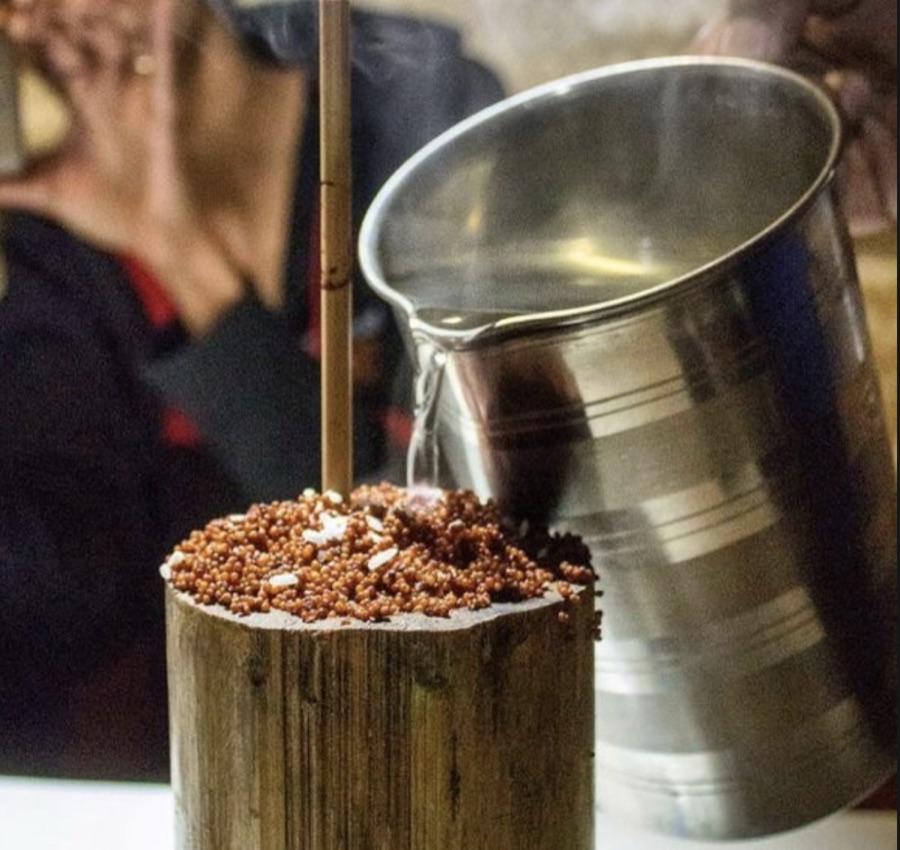
Ground apple, guras, guava, kiwi. Traditional fermented beverages.

A resident with deep knowledge of birds, herbs, and local trails.

The path is narrow. The canopy is thick. Light comes in at angles. You hear the cave before you see it. The forest does not perform. It simply is.
You carry back the silence. It stays longer than the memory does.
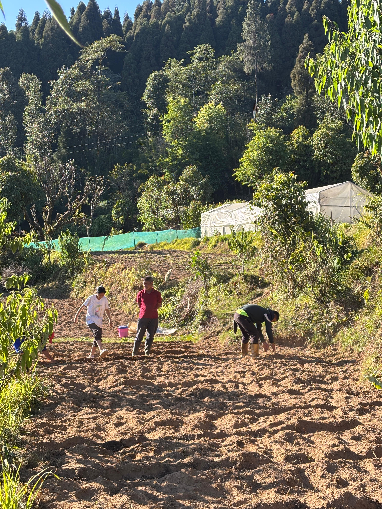
The soil is dark and cool. The slope is steep enough that you grip with both hands. No programme. No instructor. The family is working and you join them. Nothing is explained unless you ask.
You carry back the knowledge that your hands remember things your head forgot.
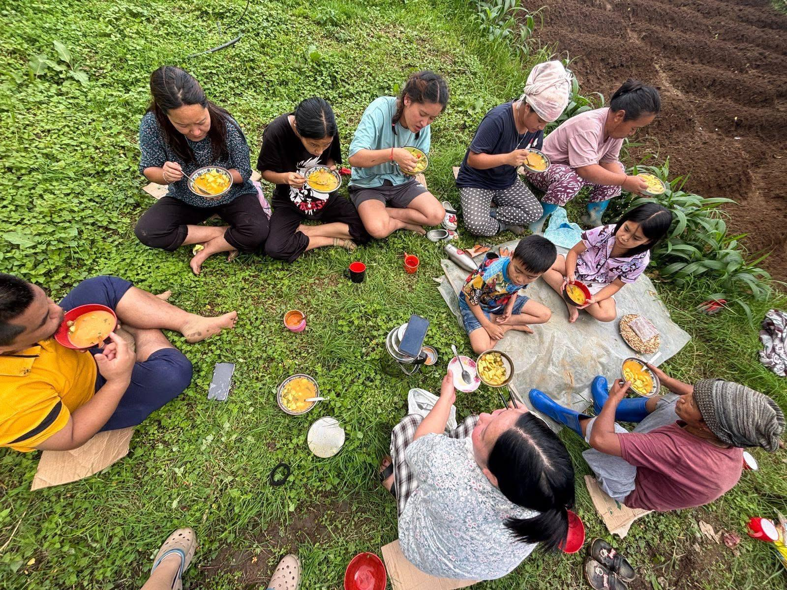
The smoke from the kitchen comes first. Then the sound of the family inside. Then the smell of something that has been cooking for hours. You sit where there is space. You eat what they eat.
You carry back a meal you will try to describe and never quite manage.
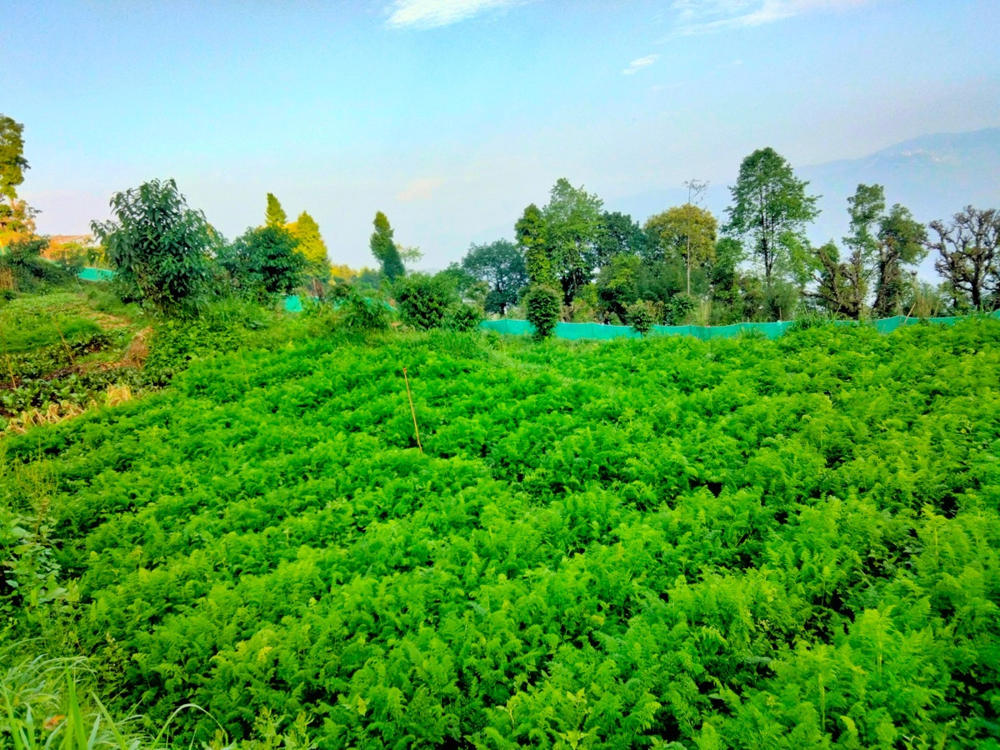
Every third plant has a name in Sherpa, a name in Nepali, and a use that was never taught in school. The walk ends with something brewed from what was just found. You drink it warm.
You carry back the names of things. You will notice them everywhere after.
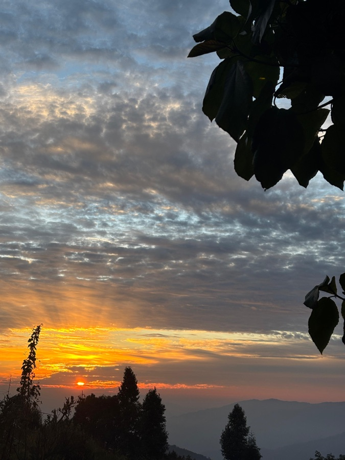
It is cold. The valley fills with sound before it fills with light. The guide stops walking before you hear anything. Then you hear everything.
You carry back the patience. The ability to stop and wait for something to arrive.
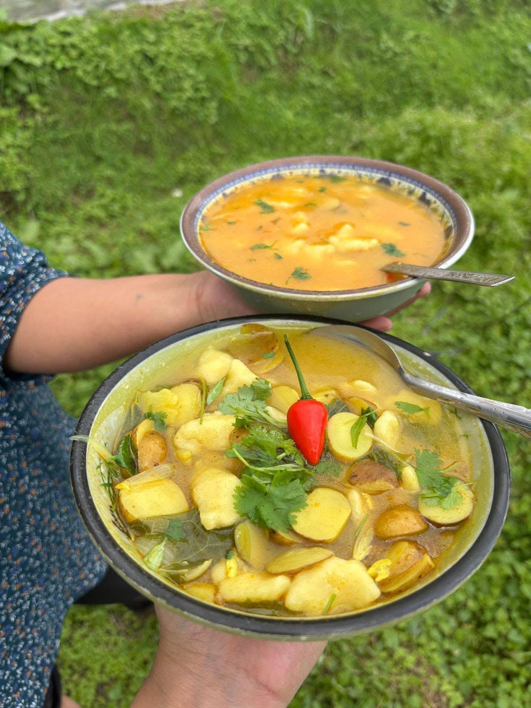
Tongba is served in a bamboo vessel. The straw is metal. The drink is warm. Ground apple wine is pale yellow and slightly cloudy. Guras wine is deep red and smells like the hillside in April. You do not taste the valley so much as feel it.
You carry back a taste that has no reference point. It exists only here.
← scroll to explore all experiences →
The available land across Jautaar's six households will be cultivated as a cooperative flower landscape. Each family grows a different species. Together the six plots create a varied, living garden that spreads across the hamlet through every season. Lavender. Sunflowers. Cosmos. Dahlias. Aromatic herbs. Sequenced to bloom from spring to late autumn.
The landscape is not only for looking at. Lavender yields essential oil pressed and bottled in the village to sachets, soaps, and small remedies guests carry home. Aromatic herbs become the evening tea. Guras flowers, already used in traditional wine, become something guests can learn to press and preserve. Sunflowers give seed and oil. Every plant the community grows has more than one life.
Named bloom seasons create a reason to travel at a specific time. The Dutch tulip season is the reference: a dated event, a window of colour, a reason to plan your year around a village.
Hover over each flower to see it in bloom
* Species selection to be confirmed with the Horticulture Department.
The Seasons of Jautaar
Barsey rhododendrons. The cultivated flowers at their peak. The most visual moment of the year.
Everything is alive. Writers come. Researchers stay. The forest is at its most dense.
The clearest mountain views of the year. Kanchenjunga. Darjeeling. The harvest.
Losoong festival. Cham dances at nearby monasteries. Cold clear skies.
Bhumchu at Tashiding. The village at its quietest. The pre-bloom pause.
← scroll to explore all seasons →
Twelve rooms. A maximum of twenty-four guests at any time. The people who come are not looking for a resort. They are looking for somewhere real.
Indian and international. Seeking altitude, silence, and uninterrupted weeks.
Academics, ecologists, anthropologists. Coming for the depth of the place.
Post-exit or pre-raise. Needs altitude and distance from noise.
Four to eight people. Focused thinking. No conference room needed.
Drawn by the visual story. The stone house. The monastery. The valley.
Drawn by the cave. Staying for the silence.
From Europe, Southeast Asia, the diaspora. Looking for culture, not landmarks.
Gumpadara is not a resort that employs the community. It is a community that has chosen to open its doors. Every family is a partner. The meals come from their kitchen. The trails are walked by people who have known these forests since childhood. You do not visit a place. You step into a life that was already being lived.
"Nothing like this exists in India today."
Mark the path. Name it. Open the monastery to visitors.
Communal kitchen and dining hall at Land of Peace.
A still pond reflecting the hillside. The visual anchor of the village.
Six families. Six species. One cooperative bloom.
A space for the village to gather, perform, and host.
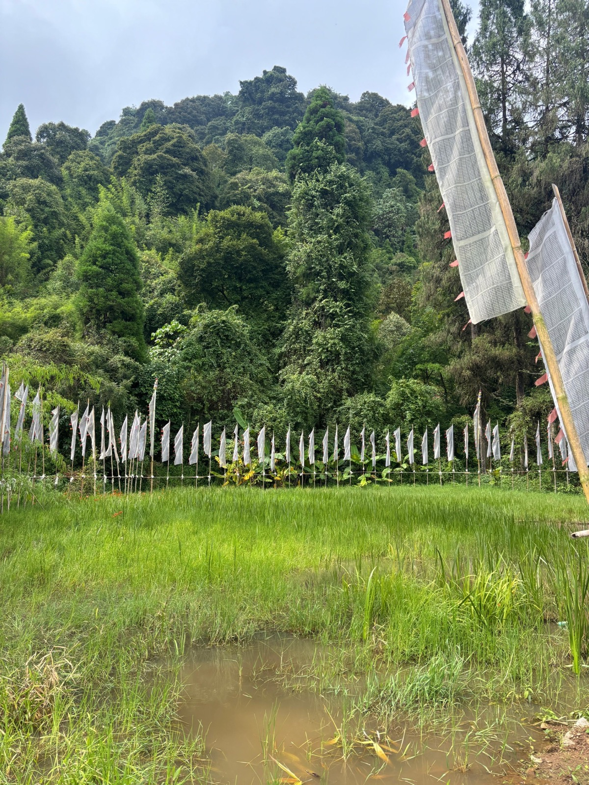
Gumpadara does not want guests who come and go.
It wants people who arrive one way and leave another.
A Sherpa hamlet of six households in West Sikkim.
India's first community-owned village experience.
There is nothing else like it in Sikkim. There is nothing else like it in India.